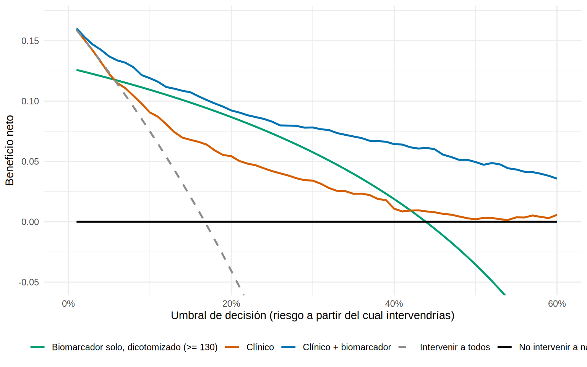
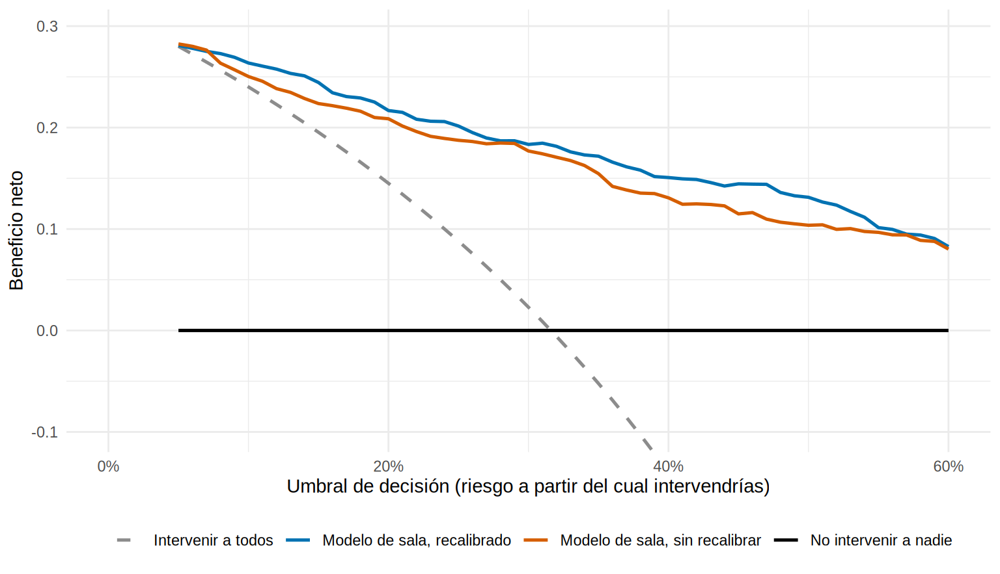

library(tidyverse)
source("R/funciones_extra_cap16.R")
dx <- read_csv("Bases/dx_lra.csv", show_col_types = FALSE) |> # datos SIMULADOS (Cap. 16)
mutate(log2_ngal = log2(ngal), log_creat = log(creat_ingreso))
f_clin <- lra ~ I(edad / 10) + diabetes + sepsis + nefrotoxicos + log_creat + entorno
f_full <- update(f_clin, . ~ . + log2_ngal)
## Predicciones fuera de muestra (validación cruzada), para no evaluar la decisión con trampa
p_clin <- prob_cv(f_clin, dx, K = 10, semilla = 166)
p_full <- prob_cv(f_full, dx, K = 10, semilla = 166)
y <- dx$lraCurvas de decisión: ¿el modelo ayuda a decidir mejor?
Nota🩺 Escenario
Tu UCI aplicará el paquete KDIGO a los pacientes con riesgo alto de LRA. Tienes tres opciones: aplicarlo a todos, a nadie, o a quienes el modelo marque. El modelo tiene un AUC de 0.89 y está bien calibrado. Pero la pregunta que decide si lo usas es otra: ¿gana el paciente? ¿Se detectan más casos de los que se sobretratan, dado lo que cuesta sobretratar?
Un AUC alto, e incluso una buena calibración, no garantizan que el modelo mejore las decisiones. Las curvas de decisión (decision curve analysis, DCA; Vickers y Elkin, 2006) responden esa pregunta con una cuenta sencilla que sí tiene en cuenta las consecuencias: los falsos positivos no pesan lo mismo que los verdaderos positivos, y cuánto pesan depende de cuánto riesgo estás dispuesto a aceptar para actuar.
Lo que vamos a hacer
- Entender el umbral de decisión y el beneficio neto.
- Calcular el beneficio neto “a mano” con nuestra función
beneficio_neto()y dibujar la curva de decisión. - Leerla: ¿en qué umbrales el modelo gana a “tratar a todos” y “a nadie”?
- Ver la versión con el paquete
dcurves(condicional) y cómo afecta la mala calibración.
Paso 1. El umbral de decisión: cuánto riesgo justifica actuar
Imagina que decides aplicar el paquete KDIGO a todo paciente con riesgo predicho ≥ 20 %. Ese umbral (\(p_t\)) dice algo sobre cómo valoras los errores: aceptas tratar a 4 pacientes sin LRA por cada paciente con LRA al que sí le sirve (porque \(p_t/(1-p_t) = 0.2/0.8 = 1/4\)). Si el paquete fuera más costoso o riesgoso, el umbral subiría; si fuera barato y seguro, bajaría. El umbral expresa el balance entre daño y beneficio de intervenir, y lo fija la clínica, no la estadística.
Con ese peso se define el beneficio neto (BN):
\[ \text{BN}(p_t) = \frac{\text{VP}}{n} - \frac{\text{FP}}{n} \times \frac{p_t}{1 - p_t} \]
Es la proporción de verdaderos positivos, descontando los falsos positivos ponderados por el umbral. Se lee como “verdaderos positivos por paciente, neteados del daño de los falsos positivos”. Multiplicado por 100: casos beneficiados por cada 100 pacientes, ya descontado el sobretratamiento.
Paso 2. El beneficio neto, paso a paso
Calculemos el BN a mano para un umbral de 20 %: contamos verdaderos y falsos positivos con la regla “riesgo ≥ 20 %”.
pt <- 0.20
pos <- p_full >= pt # a quién trataría el modelo
vp <- sum(pos & y == 1); fp <- sum(pos & y == 0); n <- length(y)
peso <- pt / (1 - pt) # cuánto "pesa" un falso positivo (0.25)
bn_modelo <- vp / n - fp / n * peso # beneficio neto del modelo
bn_todos <- mean(y) - (1 - mean(y)) * peso # tratar a todos: todos son "positivos"
bn_nadie <- 0 # tratar a nadie: ni gana ni pierde
c(VP = vp, FP = fp, BN_modelo = bn_modelo, BN_todos = bn_todos, BN_nadie = bn_nadie) |> round(4) VP FP BN_modelo BN_todos BN_nadie
251.0000 266.0000 0.0922 -0.0406 0.0000 beneficio_neto(p_full, y, pt) # nuestra función da lo mismo# A tibble: 1 × 4
umbral vp fp beneficio_neto
<dbl> <int> <int> <dbl>
1 0.2 251 266 0.0922Qué vemos: con umbral de 20 %, el modelo trata a 517 pacientes (251 con LRA y 266 sin ella) y tiene un BN de 0.092: unos 9.2 casos beneficiados por cada 100 pacientes, después de descontar el sobretratamiento. “Tratar a todos” tiene un BN negativo (-0.041): sobretratar a tanta gente cuesta más de lo que se gana. “Tratar a nadie” es 0 por definición. Un modelo solo es útil si su BN es mayor que el de las dos estrategias simples: el mayor entre el de “todos” y el de “nadie”.
También se puede expresar en intervenciones evitadas: comparado con tratar a todos, la ganancia del modelo equivale a evitar unos 53 tratamientos innecesarios por cada 100 pacientes, sin dejar de tratar a nadie que lo necesite (es la diferencia de BN dividida entre el peso del umbral).
Paso 3. La curva de decisión: todos los umbrales a la vez
Como cada clínico o servicio tendría un umbral distinto, se calcula el BN para muchos umbrales y se dibuja. Agregamos tres estrategias: el modelo clínico, el modelo clínico + biomarcador y el biomarcador dicotomizado en el corte de Youden (≥ 130 ng/mL de 16.3).
estrategias <- list(`Clínico` = p_clin,
`Clínico + biomarcador` = p_full,
`Biomarcador solo, dicotomizado (>= 130)` = as.numeric(dx$ngal >= 130)) # 0/1: "positivo" = riesgo 1
dca <- curva_decision(y, estrategias, umbrales = seq(0.01, 0.60, by = 0.01))
grafico_dca(dca, ymin = -0.05, xmax = 0.6)
Cómo se lee (es la parte clave):
- El eje vertical es el beneficio neto: más alto es mejor. El eje horizontal es el umbral.
- “Intervenir a todos” (gris, discontinua) empieza cerca de la prevalencia y cae al subir el umbral, hasta hacerse negativa. “No intervenir a nadie” es la línea en 0.
- Una estrategia útil es la que va por encima de ambas. Cuanto más alta, más útil.
- Donde la curva del modelo toca a “todos” o “nadie”, no aporta nada: ahí da lo mismo usarlo o no.
dca |>
filter(umbral %in% c(0.05, 0.10, 0.20, 0.30, 0.40)) |>
pivot_wider(names_from = estrategia, values_from = beneficio_neto) |>
mutate(across(where(is.numeric), \(x) round(x, 3)))# A tibble: 4 × 6
umbral `Intervenir a todos` `No intervenir a nadie` Clínico
<dbl> <dbl> <dbl> <dbl>
1 0.05 0.124 0 0.123
2 0.2 -0.041 0 0.054
3 0.3 -0.189 0 0.034
4 0.4 -0.388 0 0.011
# ℹ 2 more variables: `Clínico + biomarcador` <dbl>,
# `Biomarcador solo, dicotomizado (>= 130)` <dbl>Qué vemos: el modelo con biomarcador está por encima de “todos” y de “nadie” en todo el rango dibujado, y por encima del modelo clínico: en 10 % su BN es 0.119 (clínico: 0.091; tratar a todos: 0.075) y en 30 % es 0.078 (clínico: 0.034). A umbrales muy bajos (5 %) las curvas se juntan con “tratar a todos”: si casi cualquier riesgo justifica actuar, el modelo tiene poco que aportar sobre tratar a todos. El modelo clínico aporta menos: en 30 % su BN (0.034) es menos de la mitad del completo, y por encima del 45 % casi no se separa de “nadie”. El biomarcador dicotomizado (≥ 130) supera al modelo clínico hasta umbrales cercanos al 40 %, pero siempre queda por debajo del modelo completo y a un umbral de 50 % su BN es incluso negativo (-0.036): dicotomizar tira información y aquí además empeora las decisiones exigentes.
Un intervalo de incertidumbre ayuda: la diferencia de BN entre el modelo completo y el clínico a un umbral de 20 %, con bootstrap:
set.seed(166)
dif_bn <- replicate(500, {
i <- sample(length(y), replace = TRUE)
beneficio_neto(p_full[i], y[i], 0.20)$beneficio_neto - beneficio_neto(p_clin[i], y[i], 0.20)$beneficio_neto
})
c(diferencia = beneficio_neto(p_full, y, 0.20)$beneficio_neto - beneficio_neto(p_clin, y, 0.20)$beneficio_neto,
quantile(dif_bn, c(0.025, 0.975))) |> round(3)diferencia 2.5% 97.5%
0.038 0.027 0.050 Qué vemos: el biomarcador añade 3.8 casos beneficiados por cada 100 pacientes a un umbral de 20 %, con IC 95 % de 2.7 a 5. Como el IC no incluye el 0, la ganancia no parece un artefacto del azar.
Paso 4. El rango de umbrales es una decisión previa
Una DCA solo tiene sentido si antes de verla has definido el rango de umbrales razonables para la decisión. Por ejemplo, para un paquete KDIGO (barato, de bajo riesgo), quizá 5-20 %: aceptar entre 4 y 19 pacientes tratados sin necesidad por cada caso de LRA detectado. Para una intervención más invasiva (p. ej., traslado a UCI o iniciar profilaxis con riesgos), 30-50 %. Si el rango clínico está donde las curvas no se separan, el modelo no sirve para esa decisión, aunque su AUC sea alto.
Los umbrales que el equipo defina deben salir de la discusión clínica, con la mejor información sobre daños y beneficios; no se escogen después, mirando dónde luce mejor el modelo.
Paso 5. La calibración sí importa para la decisión
En 16.5 vimos que un modelo de sala usado en UCI subestima el riesgo. Veamos si eso cuesta decisiones: comparamos el BN del modelo sin recalibrar y recalibrado en la UCI.
sala <- filter(dx, entorno == "Sala"); uci <- filter(dx, entorno == "UCI")
m_sala <- glm(lra ~ I(edad / 10) + diabetes + sepsis + nefrotoxicos + log_creat + log2_ngal, data = sala, family = binomial)
p_uci <- predict(m_sala, uci, type = "response")
lp_uci <- qlogis(p_uci)
p_uci_recal <- plogis(lp_uci + coef(glm(lra ~ offset(lp_uci), data = uci, family = binomial)))
dca_uci <- curva_decision(uci$lra, list(`Modelo de sala, sin recalibrar` = p_uci, `Modelo de sala, recalibrado` = p_uci_recal),
umbrales = seq(0.05, 0.60, by = 0.01))
grafico_dca(dca_uci, ymin = -0.1, xmax = 0.6)
Qué vemos: el modelo sin recalibrar subestima el riesgo, y por eso toma decisiones distintas a las que pretendías con cada umbral. El recalibrado tiene un BN mayor en casi todo el rango; por ejemplo, a un umbral de 40 % pasa de 0.131 a 0.151 (unos 2 casos más beneficiados por cada 100 pacientes de UCI). La mejora es modesta en este ejemplo, pero la lección es general: usar un umbral de 40 % supone que “40 %” signifique 40 %. Y a la inversa: una DCA no revela por sí sola una mala calibración con claridad; revísalas juntas (16.5).
Paso 6. Con el paquete dcurves
El paquete dcurves (Sjoberg) implementa la misma cuenta, más funciones para el “número de intervenciones evitadas” y curvas con bootstrap. Código no verificado en el entorno de pruebas del libro; se ejecuta en tu máquina si el paquete está instalado:
library(dcurves)
dx_pred <- dx |> mutate(p_clinico = p_clin, p_completo = p_full) |> select(lra, p_clinico, p_completo) # lra: 0/1
dca(lra ~ p_clinico + p_completo, data = dx_pred, thresholds = seq(0.01, 0.60, by = 0.01),
label = list(p_clinico = "Clínico", p_completo = "Clínico + biomarcador")) |>
plot(smooth = TRUE) # beneficio neto
dca(lra ~ p_clinico + p_completo, data = dx_pred, thresholds = seq(0.01, 0.60, by = 0.01)) |>
net_intervention_avoided() |> plot() # intervenciones evitadas por 100 pacientes
Advertencia⚠️ Lo que una curva de decisión no dice
- No sustituye a un estudio de impacto. Muestra que, si usas el modelo con ese umbral, tu balance daño-beneficio es mejor en esta población; no demuestra que los pacientes mejoren (eso requiere un ensayo o un estudio de impacto).
- Depende de la prevalencia y de la población: el BN calculado en una muestra con prevalencia artificial (casos y controles) no sirve.
- Hay que evaluarla fuera de muestra (validación cruzada, bootstrap o datos nuevos): una DCA con el AUC aparente de un modelo sobreajustado se ve mejor de lo que será.
- El umbral se define antes de ver la curva, con criterio clínico, no después, buscando donde la curva luzca mejor.
Importante🎯 En resumen
- El umbral de decisión expresa cuántos falsos positivos aceptas por cada verdadero positivo; lo fija la clínica.
- El beneficio neto = VP/n − FP/n × pt/(1 − pt) combina aciertos y errores con ese peso. Un modelo es útil si su BN supera a “tratar a todos” y a “a nadie” en el rango de umbrales relevante.
- La curva de decisión dibuja el BN para todos los umbrales; se puede traducir a casos beneficiados o intervenciones evitadas por 100 pacientes.
- La DCA depende de la calibración y de la prevalencia: evalúala fuera de muestra y en la población donde se usará.
- Un AUC alto no es utilidad clínica; la DCA es una forma de acercarse a ella, pero no reemplaza un estudio de impacto.
Ejercicio
- Calcula a mano (con
beneficio_neto()) el BN del modelo completo y de “tratar a todos” con un umbral del 10 % y del 50 %. ¿En cuál de los dos el modelo aporta más? ¿Por qué? - Dibuja la curva de decisión solo en la UCI y solo en la sala (con las predicciones
p_fullcorrespondientes). ¿Cambia el rango de umbrales donde el modelo es útil? ¿Qué implica la prevalencia? - Traduce la diferencia de BN entre el modelo completo y “tratar a todos” a un umbral de 20 % en “intervenciones evitadas por 100 pacientes”. Compara con lo que calculaste en el Paso 2.